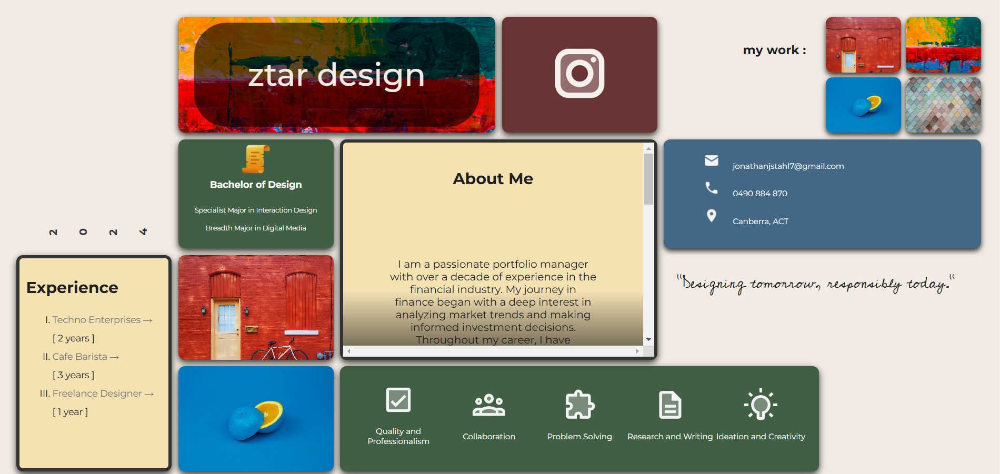

Bento Box Style Integration
The bento box-style website layout is a modern trend in web development that leverages compartmentalization, efficiency, and aesthetic appeal, seamlessly integrating responsive design to adapt to users' limited attention spans. Widely adopted by industry leaders like Apple, it is particularly effective for creating visually compelling and functional portfolio websites.
- Compartmentalization: Organizes content into distinct, easy-to-navigate sections.
- Efficiency: Optimizes space and layout for quick information retrieval.
- Aesthetic Appeal: Combines modern design elements for a clean, polished look.
- Responsive Design: Adapts layouts seamlessly across various devices and screen sizes.
- User-Focused: Aligns with shorter attention spans by presenting information in a clear, digestible format.